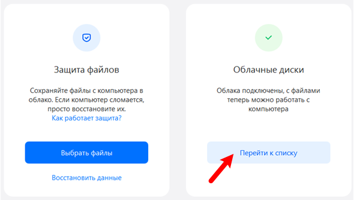
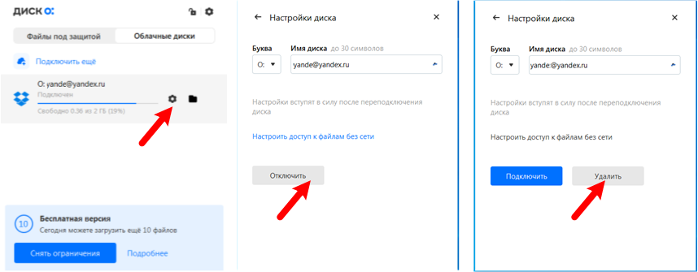
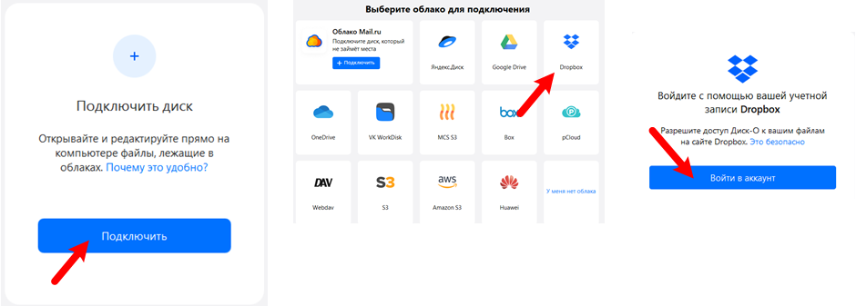
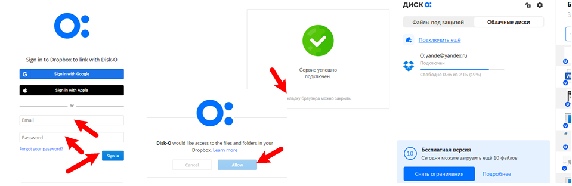

The Visio TreeView template was originally designed to document the file system. However, users constantly ask the question - is it possible to use it for cloud storage.
The answer is that it is possible, although some additional efforts will be required.
First, in addition to scanning the file system, the template accepts data from a text file. That is, it is enough to somehow scan any storage and present the data in a certain format, in order to then display them in the Visio TreeView. According to this option, two additional applications were made:
- FTP scanner for Visio TreeView template. The scanner is made in the form of EXE, the installer in the ZIP archive is attached to the article.
- Google Drive scanner for Visio TreeView template. The scanner is made as a Python script and is attached to the article.
Secondly, aggregator programs have recently begun to appear that allow you to display the structure of cloud storage in the form of a local disk. From the point of view of the file structure, the cloud becomes indistinguishable from a local disk. Consider one of these aggregators - Disk-O.
Disk-O allows you to connect all the most popular cloud storages.
In general, You can make local copies of remote data, but this is not required. There is a mode in which nothing is transferred to local disks.
The service is paid, but there is a limited free version, which is enough to work with TreeView. Main restrictions: the free version can connect only one storage at any time and there is a limit on the number of uploaded files per day. But loading files for TreeView is not needed at all, and storage can be switched as needed. Connect only the one whose structure you need to view or document at the moment.
I will give a few pictures explaining the process of reconnecting the cloud.
Disconnecting a previously connected drive

In the main window of the Disk-O there is a button "Go to list". Clicking it opens a window with a list of connected drives. Naturally, in the free version, there is only one name in the list. When you hover over this position, the settings icon becomes visible. You need to click on it and on subsequent screens click on the "Disconnect" and "Delete" buttons. No files are deleted from the cloud, only the connection with the storage is disconnected.

Connecting a new cloud
Note: it is assumed that you already own a certain area in the cloud and the task is only to connect the cloud through the Disk-O program.
You need to click on the "Connect" button and select the desired service from the 13 offered. For example, Dropbox. The program will prompt you to log into your account in the cloud.

Next, control is transferred to the Dropbox service so that you, as the owner of the cloud, allow access to the Disk-O application. You need to enter Email, password, click on "Sign in" and on the next screen, click on the "Allow" button. A message will follow that the browser is no longer needed and the Disk-O program will show a new position in the list of connected drives.

That's all. You can launch Visio TreeView and start scanning and drawing the cloud storage folder and file structure.
Most likely, the cloud storage will send you an email notification that Disk-O has opened access to it. When you no longer need this access, you can remove this permission using your cloud storage account.